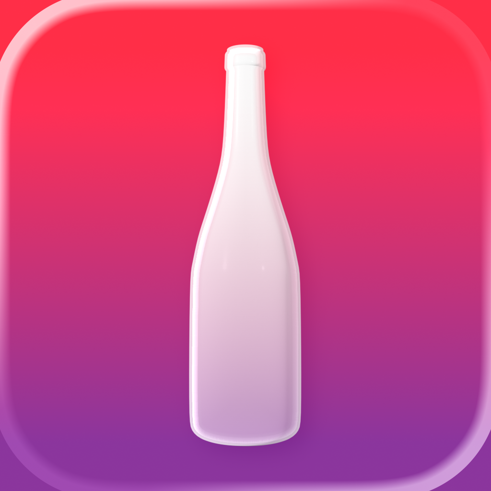
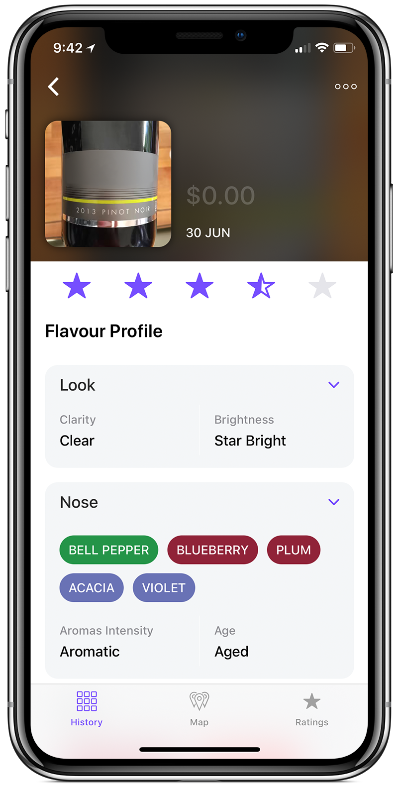
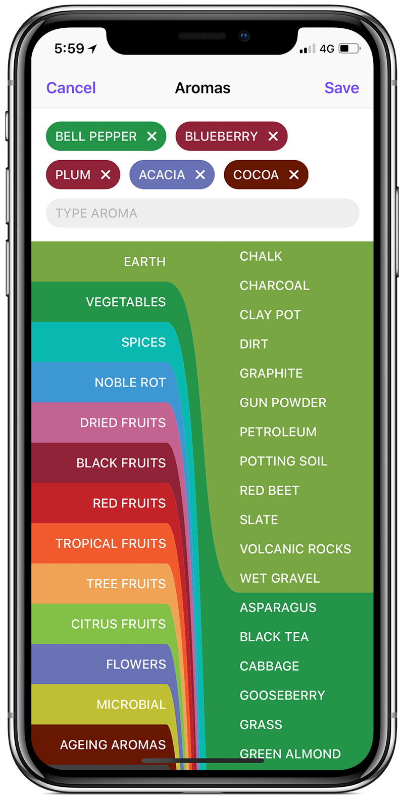
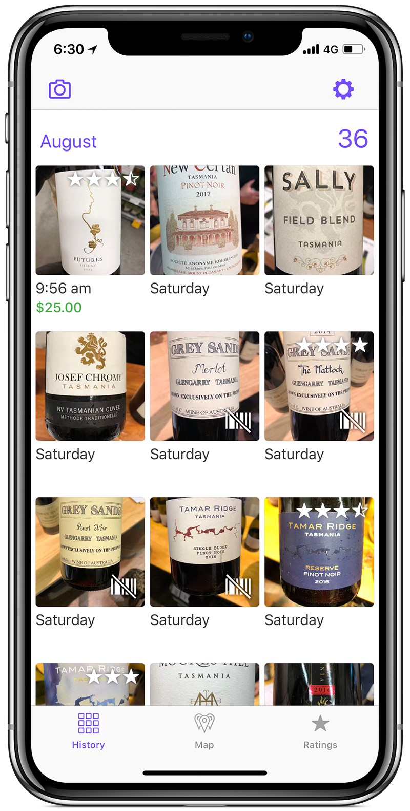
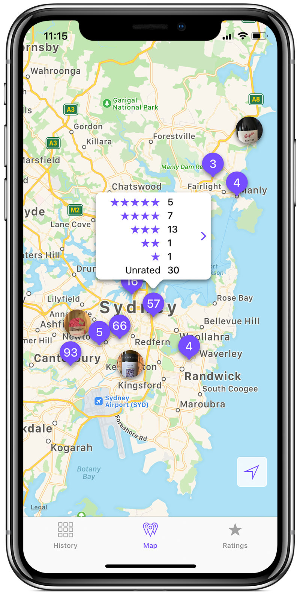

From novice to connoisseur, gotBottle empowers you to discover, remember, and share your wine journey like never before.
Effortlessly catalog wines with barcode scanning or photo capture. Create your personal wine library with detailed tasting notes and memories.
Unlock your palate with our comprehensive aroma wheel. Identify and explore over 200 unique wine characteristics to enhance your tasting skills.
Filter and sort your collection by rating, location, or tasting date. Rediscover hidden gems and track your evolving wine preferences.
Train your palate like a sommelier with our intuitive aroma wheel featuring 200+ carefully curated scents and flavors. From subtle hints of vanilla to bold notes of blackcurrant.
Expertly Organized Categories
Navigate through fruit, spice, earth, and oak families with professional classification systems used by wine experts worldwide.
Intuitive Selection
Smooth scrolling interface lets you quickly identify and select the precise aromas you detect in each glass.
Personal Touch
Add your own unique descriptors when words fall short. Build a personalized vocabulary that captures your wine experiences perfectly.

Relive every memorable bottle with a beautifully organized timeline of your wine discoveries. Watch your palate evolve and celebrate your wine milestones.

Monthly Wine Adventures
See your exploration patterns and discover seasonal preferences as your collection grows month by month.
At-a-Glance Quality
Instant visual ratings help you quickly identify your favorites and remember which bottles deserve a second visit.
Transform your wine discoveries into a global adventure. Visualize your tastings across continents and uncover geographic patterns in your wine preferences.
